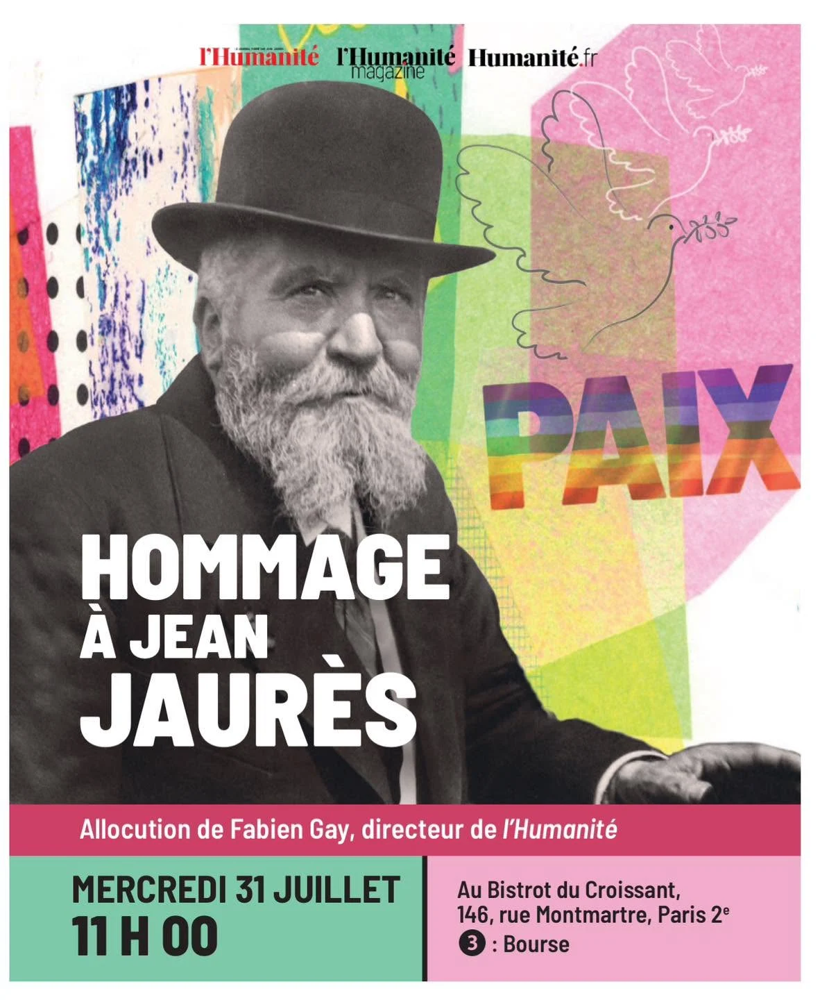

Publication relayée par le PCF 79
Fabien Gay relaie l’annonce de l’hommage à Jean Jaurès au Café du Croissant
Date de mise à jour indiquée par Facebook · 1 août 2024
Texte de la publication · Fabien Gay
Il y a 110 ans, Jean Jaurès, fondateur de l’Humanité fût assassiné par un nationaliste d’extrême droite Raoul Villain.
Demain, comme chaque année, nous lui rendrons hommage.
Rdv mercredi 31 juillet, au café du croissant, 146 rue Montmartre à 11 heures.
Repères éditoriaux
L’annonce d’origine fixe l’hommage au mercredi 31 juillet 2024 à 11 h au Café du Croissant. Le partage du PCF 79 est daté du lendemain.

Sources
Fabien Gay · publication relayée par le PCF 79 · bibliothèque Facebook · AR-0002-FB-01309
À lire aussi · Fabien Gay rend hommage à Jean Jaurès au Café du Croissant